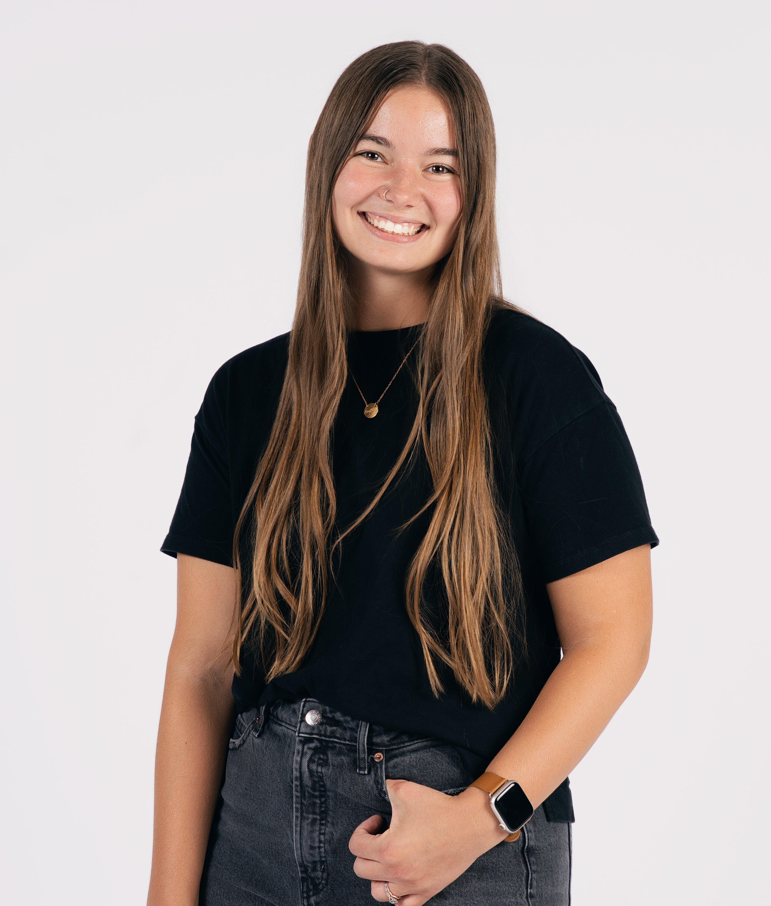

About Me
Hi I'm Jaymi! I am currently in my 6th year of teaching Middle School Spanish in the Lee's Summit area. I am currently working towards my Master's degree in "Technology In Schools" to learn more about the tech world and for more job flexibility within the school district. I also work part time at my church as our Worship Minister so I love to sing and play guitar but also use a lot of technology through that role as well.
I love to read, craft, workout, drink coffee, play video games, and be around people! I am an extrovert through and through. My Spanish background comes from me being able to attend a bilingual elementary school from Kindergarten to 6th grade and I wouldn't trade it for the world. I grew up and attended this school in Iowa, but moved to Missouri for college, met my husband of seven years, and have been here ever since!
Education
- Bilingual from Elementary School and on
- East Marshall High School; 2016
- BSE Spanish Education; Missouri Western State University; 2020
- MS Technology in Schools; University of Missouri; will complete by 2027